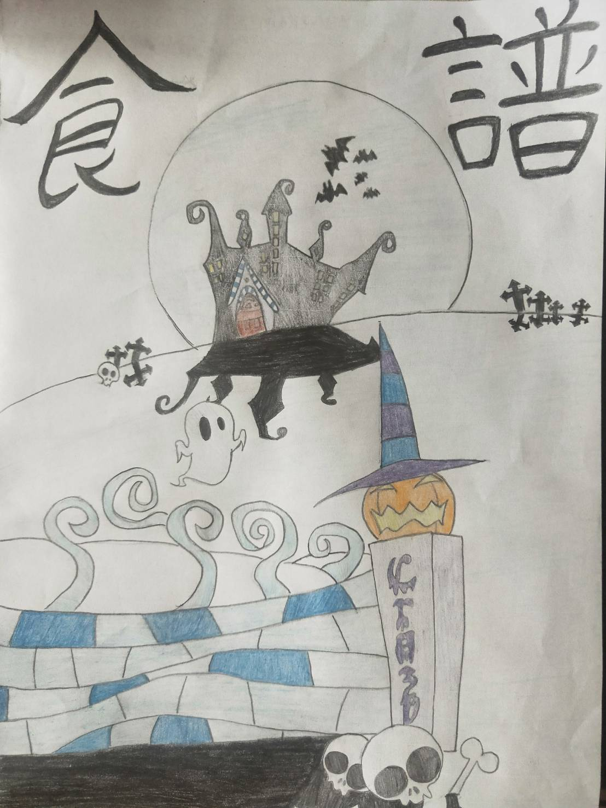
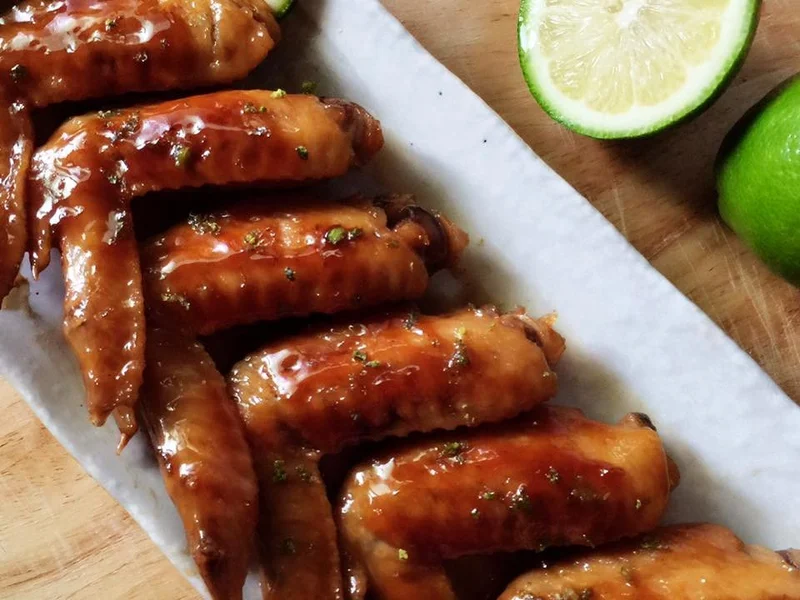
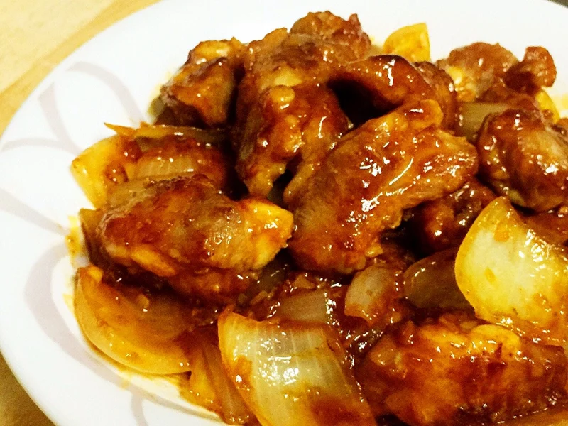
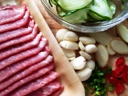

食譜教學網站

食譜封面

檸檬雞翅
蒜泥白肉
藍帶豬肉捲

糖醋排骨
網站首頁
檸檬雞翅
蒜泥白肉
藍帶豬肉捲
糖醋排骨
預設顏色
藍色
粉色
綠色
紫色
預設大小
大
中
小
蒜泥白肉
食材
梅花肉片 1盒
薑 3~5片
小黃瓜 1條
蔥 2隻
紹興酒 1大匙
蒜泥 適量
醬油膏 2大匙
香油 少許
紅辣椒 1根
烏醋 1小匙

步驟一
小黃瓜刨成薄片，放5分鐘，冷水沖洗，瀝乾
步驟二
煮一鍋水，加上蔥、薑片及紹興酒1大匙煮滾後，關小火，放入肉片川燙至熟，撈起備用
步驟三
小黃瓜擺盤，放上川燙後的肉片，淋上蒜泥醬，完成~